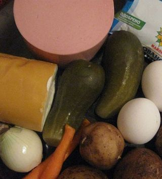
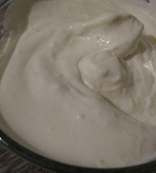
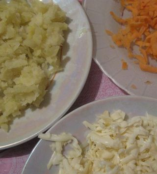
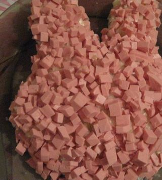

Шаг 1: Предварительная подготовка овощей.

Морковь и картофель нужно предварительно промыть от грязи и пыли, а потом варить в подсоленной воде в течение 20 минут. Яйца куриные также нужно сварить вкрутую. Готовьте их в отдельной кастрюле воде с добавлением щепотки соли в течение 10 – 15 минут. После чего остудите их в холодной воде. Морковь и картошка тоже должны остыть.
Шаг 2: Сделаем майонезно-чесночную заправку для салата.

Пока варятся и остужаются картофель, морковь и яйца не будем терять времени даром. Приготовим заправку для салата, тем более будет очень хорошо, если она немного настоится. Итак, чеснок очистите, помойте и раздавите специальным прессом. Майонез и чеснок соедините в глубокой тарелке и тщательно размещайте. Лук репчатый почистите, помойте и нарежьте очень мелко. Хотя лук также можно пропустить через чесночный пресс.
Шаг 3: Измельчаем ингредиенты.

Сваренные морковь, картофель и яйца почистите. Далее измельчаем эти и другие ингредиенты. В частности, сыр, морковку и картофель нужно натереть на крупной терке в отдельные тарелочки или мисочки. Огурцы соленые и колбасу нарежьте средники кубиками или ровной соломкой – тоже в отдельную посуду каждый ингредиент. Очень важно оставить немного колбасы для украшения блюда. Желтки и белки яиц отделяем друг от друга и натрите их в разные емкости на терке, не забыв о том, что для украшения нам понадобятся две овальных пластинки из белков.
Шаг 4: Салат выкладываем в виде кролика.

На плоское сервировочное блюдо салат выкладываем слоями в виде мордочки кролика с ушками: первым делом, огурцы, затем картофель, который намажем майонезным соусом. После того, как выложим дальнейший слой лука, белков яиц, моркови, вновь промажем салат нашей чесночной заправкой. Потом выкладываем слой колбасы, которую тоже смажем майонезом.